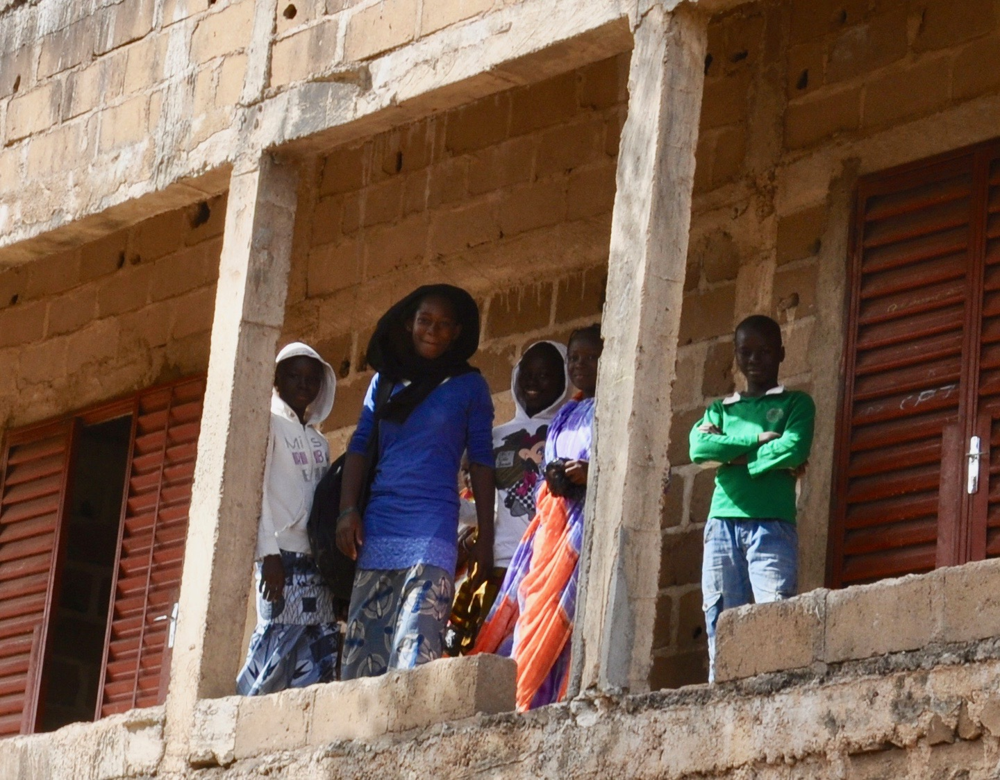
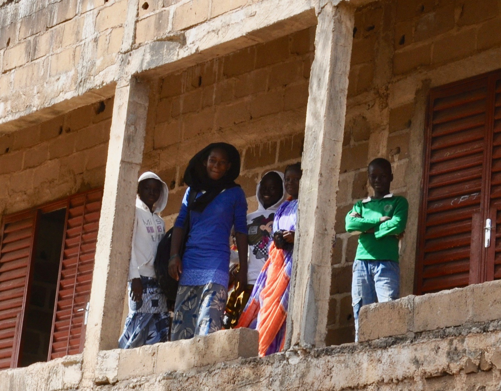

Build a School
Mali has a serious problem of schools infrustructure. In many areas of the country kids have no possibilities to go to school either because the nearest school is simply too far to walk to (5-15 km) or the available state school is so overcrowded that many kids are not able to follow the curriculum. A typical class size in a government school in Bamako is 170-200.
As the state is seriously failing to provide basic education to the ever-growing population of Mali the private sector is trying to fullfil the role of the state. In many areas of the country parents have no other option but to send their children to a modest private school. These schools are very far from what we usually expect from a private school. They are built by individuals like a teacher or a modern-thinking leader of the community with enormous effort. The construction usually takes decades at the step by step financing allows.
Our foundation is working with such schools, helping them to develop their technical facilities as well as the curriculum. Our school development projects include the construction of new classroms, wash facilities and computer rooms; along with the supply of educational materials, school stationnery and sport materials. This kind of support is what we label as ‘hardware’ projects.
We think it's important that "hardware" projects come parallel with “software” ones which help to make the best use of donations through teaching, teacher training and educational campaigns.
We only do school development projects that are based on local needs and can be followed and documented.
Our current projects
School of Winners, Bamako:
We're helping the school finish the plastering of the classrooms and build a ballustrade for the corridor to insure the safety of the children.
 

Building toilets and a hand wash station for the school. This school had no toilet facilities at all for many years. Now 4 toilets and a hand wash station are on their way. Holes have been dug but the enclosure is still missing.

As soon as the toilets and the hand wash station are finished we will organize a Hand Wash Campaign to teach the children basic hygiene and establish the custom of hand-washing. See details under the Hand Wash Campaign section.